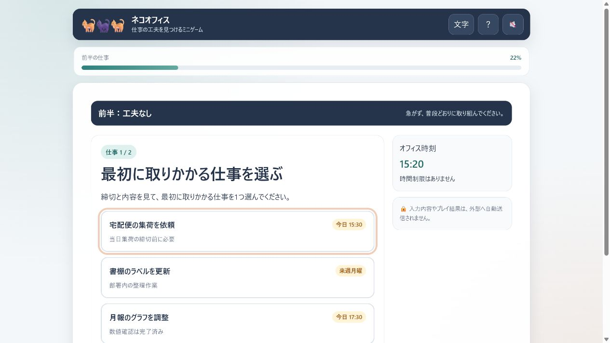
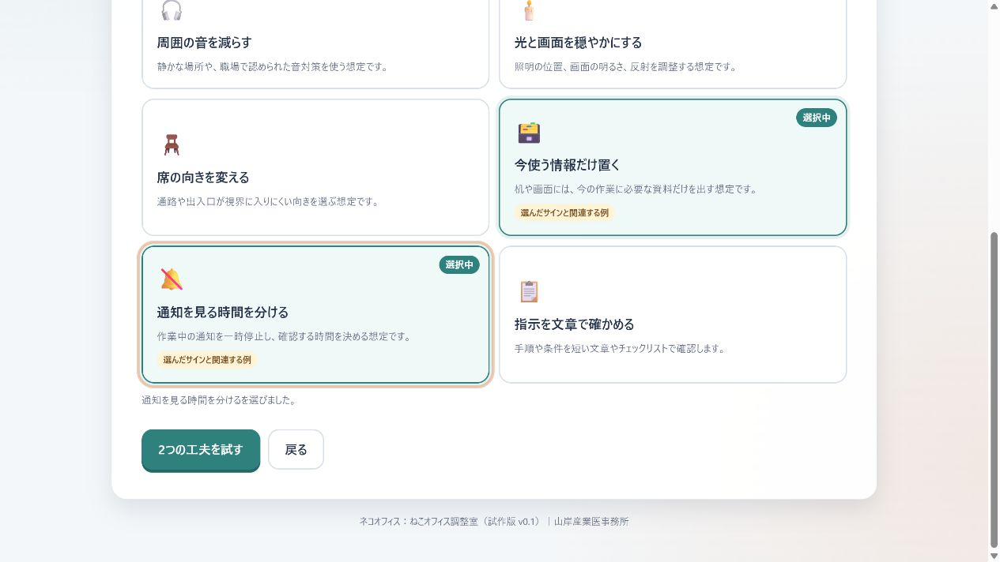
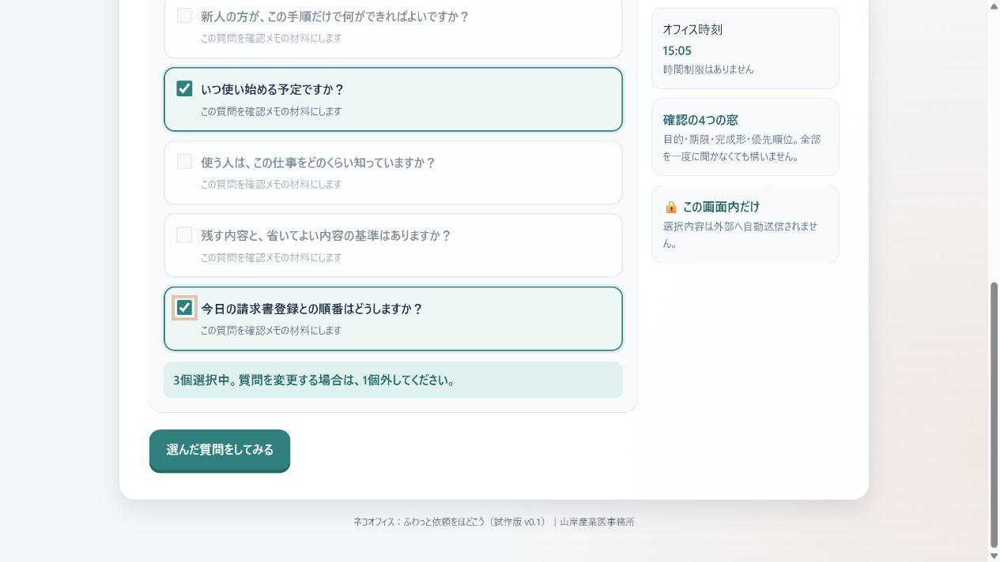
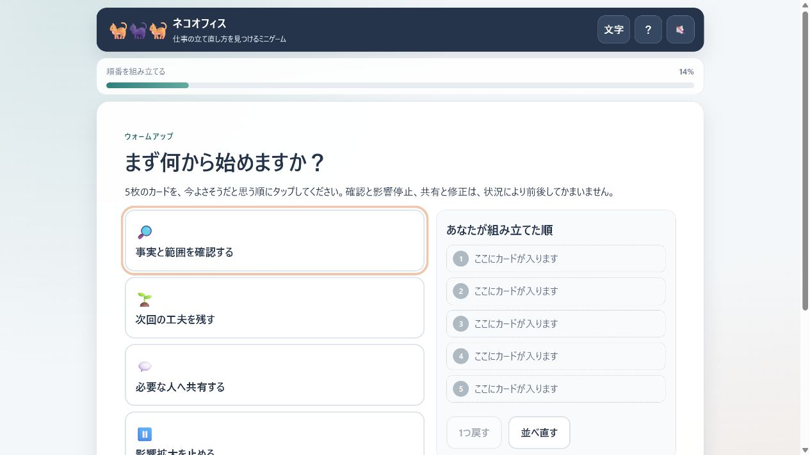
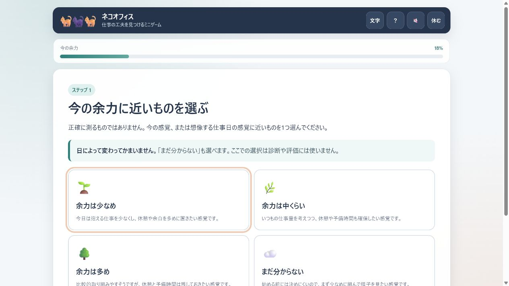
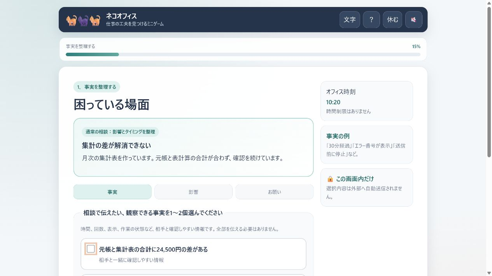

ネコオフィス ゲーム一覧
ゲーム画面の例と内容をご紹介します。各ゲームは、仕事を進めやすくする工夫を短い場面で試す成人向けの練習ゲームです。
ネコオフィス：わりこみから戻ろう

割り込み前の目印、一つずつ表示、再開前チェックを試し、割り込みの前後で感じる負担を比べます。
▶ ゲームを開くネコオフィス：ねこオフィス調整室

音、通知、照明、席、机上の情報量などを調整し、自分に合いそうな仕事環境の工夫を見つけます。
▶ ねこオフィス調整室を開くネコオフィス：ふわっと依頼をほどこう

曖昧な依頼に対して、期限、目的、完成形、優先順位の確認質問を選び、短い確認メモを作ります。
▶ ふわっと依頼をほどこうを開くネコオフィス：ミスのあとにできること

小さなミスに気づいたあと、影響拡大を止める、確かめる、伝える、直すという立て直しの流れを練習します。
▶ ミスのあとにできることを開くネコオフィス：きょうの余白をつくろう

今日の余力に合わせ、仕事、休憩、予備時間を並べて、無理の少ない一日の組み方を試します。
▶ きょうの余白をつくろうを開くネコオフィス：相談メモをつくろう

事実、仕事への影響、具体的なお願いを整理し、困ったときに短く伝えられる相談文を作ります。
▶ 相談メモをつくろうを開く※いずれのゲームも、疾病の診断・治療、能力評価、復職可否の判定を行うものではありません。負担を感じたときは、いつでも中断してください。